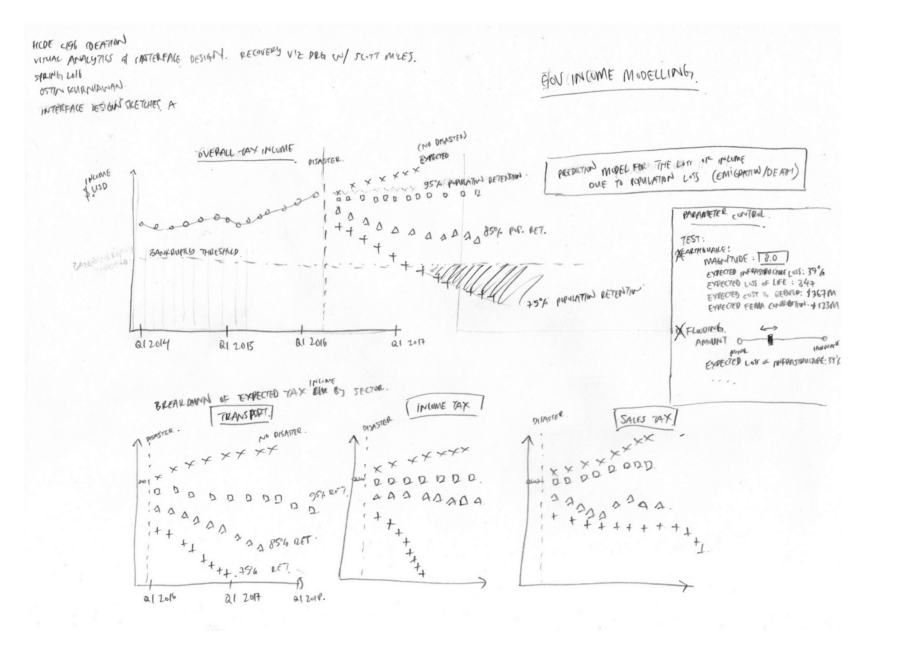
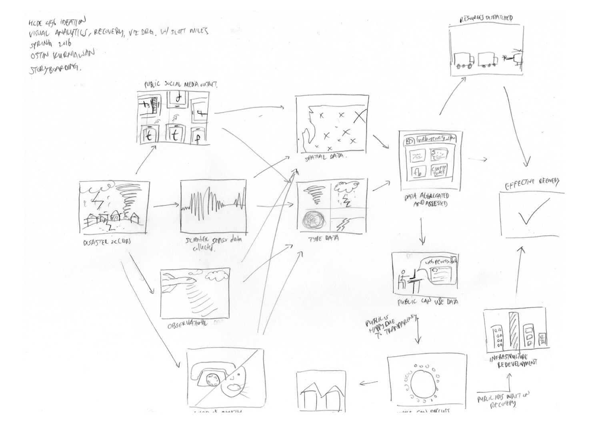
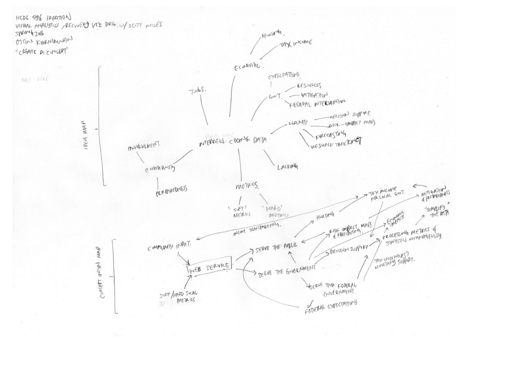
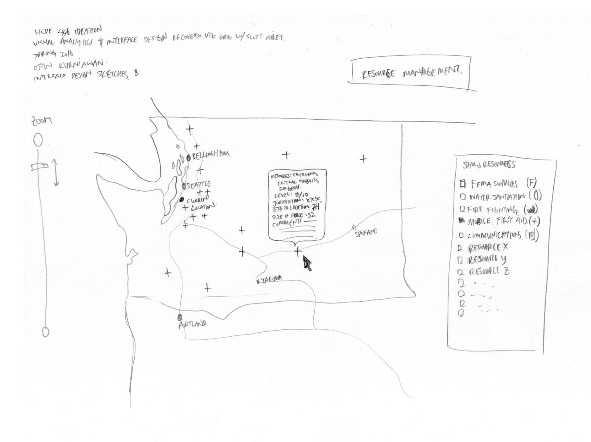
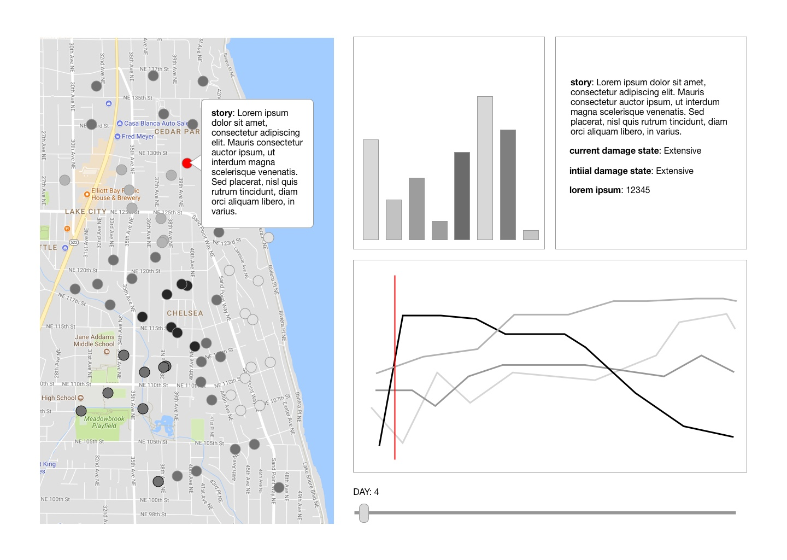
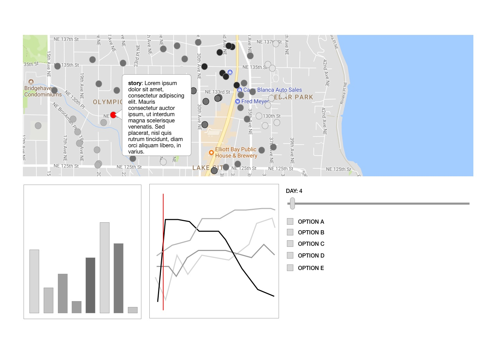
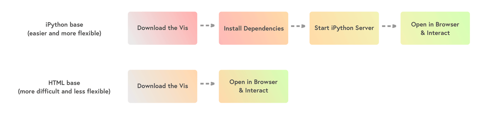
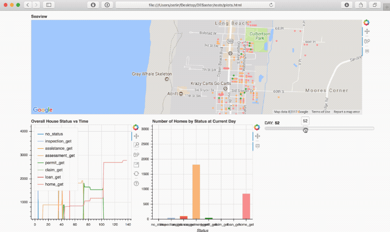

PREVIOUS RESEARCH
CREATING A GROUNDED THEORY BASIS
This project iterates upon some of the work done by student researchers in Fall 2015, where they created an interview framework and and conducted a number of interviews with managers and representatives with experience/involvement in the response, recovery, and/or mitigation efforts of large-scale disasters.
Using the web qualitative analysis tool Saturate, we qualitatively analysed a number of existing papers and the interviews conducted by the Fall 2015 team as a basis for the Grounded Theory (GT) framework for research.
Using the web qualitative analysis tool Saturate, we qualitatively analysed a number of existing papers and the interviews conducted by the Fall 2015 team as a basis for the Grounded Theory (GT) framework for research.
ITERATIVE RESEARCH
GROUNDED THEORY FINDINGS
After open-coding more than 10 hours of interviews and six papers on GT, we developed and refined a 150-code coding scheme relevant to the salient themes in the data analysed. These codes were then affinity-diagramed to identify pain points, stakeholders, system needs/wants from the perspective of these disaster managers, and much more.

Results were open-coded and qualitatively analysed to identify pain points.
RESEARCH ITERATION
Based on the affinity diagram generated, we identified a number of pain points to address in an iteration of our interview. These pain points included the capabilities of existing tools, their 'dreams' in terms of what would make their work easier and more effective, their existing experiences with Geographical Information Systems (GIS) and so on. Using a semi-structured interview format, we ran three more interviews to delve deeper into these issues. These interviews were then qualitatively analysed, and the codes generated were then integrated into our original affinity diagram to refine it further.
IDEATION
Using IDEO’s Design Kit as a “raw” method of generating ideas, each team member ran with it and created several low-fidelity ideas/prototypes/maps of our thinking. With a diverse set of interests within the research team (some members were more interested in the technical aspects while others were interested in the design aspect), we were table to generate a very diverse set of solutions or basic ideas concerning the next steps of the process.

a mock dashboard for visualising housing
stock depending on external factors

ideating through storyboarding a
potential user process

a mind map based on our coded data
and how the ideas link together

ideating through storyboarding a
potential user process
DESIGN REQUIREMENTS
Based on our interviews, affinity analysis and ideation, a set of design requirements were made to guide the design and functionality of the built product.
NEEDS
Our user base, specifically, is decision-makers in housing recovery. From our interviews, we were able to ascertain that our users:
1. May have a range of technical skills; our users range from emergency managers to community representatives.
2. Want to be able to interact with the data (the data coming from the DESaster simulation).
3. Want a GIS-based tool because that is what they have familiarity with.
1. May have a range of technical skills; our users range from emergency managers to community representatives.
2. Want to be able to interact with the data (the data coming from the DESaster simulation).
3. Want a GIS-based tool because that is what they have familiarity with.
WHAT KIND OF ENVIRONMENT WOULD IT BE USED IN?
Since these tools would be in support of post-hazard recovery, the primary way such a visualisation tool would be used would be a resource-limited environment.
WIREFRAMES
Several basic wireframes were generated to ideate upon.

Prototyping layouts, vertical map

Prototyping layouts, horizontal map
DESIGN ELEMENTS
FORMAT
A key element in the design of this tool was the distribution format. We chose to use a single HTML file (with data in an embedded JSON) generated for each simulation as it gave us a number benefits:
-
A single HTML file would be easy to distribute via email, USB memory stick, or even on an online server.
-
Pre-generating and embedding the data in a single file would negate the requirement to have a computer run the simulations on-site.
-
The learning curve to open the tool is almost non-existent, as it just requires you to open the file in a browser window.
-
Reduces user exposure to the underlying mechanics of the tool, focusing them on what's important: the interactive simulation results.
-
Can be run in resource-limited environments as it just requires a modern browser and a basic internet connection (for maps only, all data would be stored locally)
This format addresses many issues that a highly scientific simulation would usually have with a non-technical person: intuitiveness, exposure to unnecessary confusing details, and high bars to entry.
While other formats like an integrated iPython notebook would allow for more flexibility, would be easier to build, and could allow for more complex interaction with the data, the single HTML file format would allow for a controlled, universal, and universally-accessible experience. For example, when outlining the differing key user task flows (see below) regarding first use of the tool, a non-embedded iPython solution would have a much higher barrier to entry than an integrated HTML file. The potential for confusion and frustration when installing software dependencies using the command line is quite high; consequently, accessibility is prioritised over extra interaction capabilities.

While other formats like an integrated iPython notebook would allow for more flexibility, would be easier to build, and could allow for more complex interaction with the data, the single HTML file format would allow for a controlled, universal, and universally-accessible experience. For example, when outlining the differing key user task flows (see below) regarding first use of the tool, a non-embedded iPython solution would have a much higher barrier to entry than an integrated HTML file. The potential for confusion and frustration when installing software dependencies using the command line is quite high; consequently, accessibility is prioritised over extra interaction capabilities.
INTERACTION: SLIDERS
The core interaction element in the visualisations is a slider. This slider scrubs through each day of the simulation, providing a time-based view of the housing stock; their statuses, their spatial distribution, and community interaction.
The secondary interaction element in the visualisations is a hover-accessed information box. Dependent on the type of visualisation the user interacts with, it shows different contextual information. For individual data like maps, hyper-contextual data like the specific "story" for a specific house would be displayed; for aggregate data like bar graphs, counts would be displayed.
The secondary interaction element in the visualisations is a hover-accessed information box. Dependent on the type of visualisation the user interacts with, it shows different contextual information. For individual data like maps, hyper-contextual data like the specific "story" for a specific house would be displayed; for aggregate data like bar graphs, counts would be displayed.
PROTOTYPES [in progress]
Live prototypes are being developed to iterate atop of. The visualisations take the raw output from the DESaster simulation and can render a set of visualisations for each simulation. These prototypes currently undergo testing with key stakeholders (emergency management researchers) to generate valuable feedback to build upon. An example of a recent prototype is displayed below.

Actively visualising data from nearly 3000 houses in Western Washington.